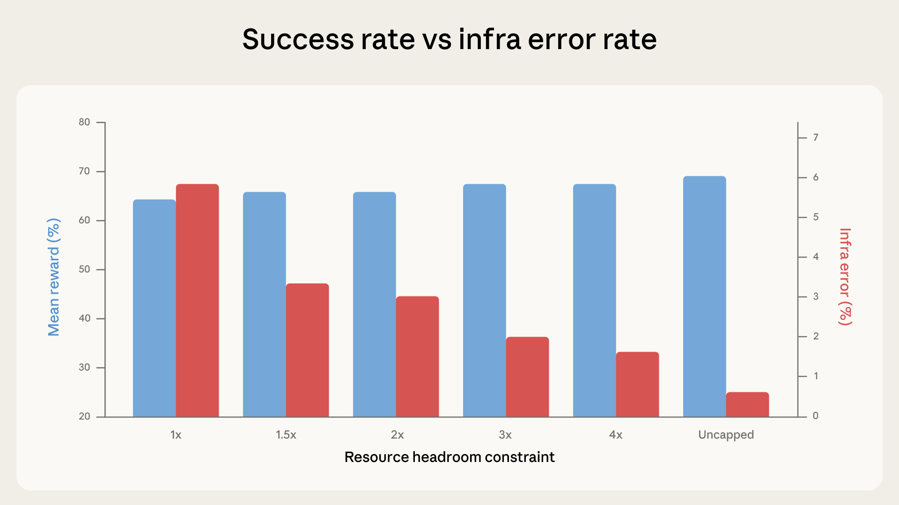

原文：Quantifying infrastructure noise in agentic coding evals 来源：Anthropic Engineering | 2026-02-05 作者：Gian Segato
· · ·
· · ·
SWE-bench 和 Terminal-Bench 等 agentic 编码 benchmark 常被用来比较前沿模型的软件工程能力——排行榜上的顶尖位置往往只相差几个百分点。这些分数经常被当作模型相对能力的精确测量，并越来越多地影响部署决策。
然而，我们发现仅基础设施配置就能产生超过这些差距的差异。在内部实验中，Terminal-Bench 2.0 上资源最多和最少的配置之间的差距是 6 个百分点（p < 0.01）。
静态 benchmark 直接对模型输出评分——运行时环境不影响结果。Agentic 编码 eval 不同：模型被给予一个完整环境，在其中编写程序、运行测试、安装依赖、跨多轮迭代。运行时不再是被动容器，而是问题解决过程的组成部分。两个资源预算和时间限制不同的 agent 不是在做同一个测试。
· · ·
我们在 Google Kubernetes Engine 集群上运行 Terminal-Bench 2.0。校准设置时，我们注意到分数与 benchmark 官方排行榜不匹配，基础设施错误率出奇地高：多达 6% 的任务因 pod 错误失败，其中大多数与模型解决任务的能力无关。
分数差异归结为执行方式。我们的 Kubernetes 实现将每任务资源规格同时作为下限和硬上限：每个容器被保证指定的资源，但超出的瞬间就被杀死。容器运行时通过两个独立参数执行资源：保证分配（预先保留的资源）和硬限制（容器被杀死的阈值）。当两者设为相同值时，瞬态峰值没有余量：一个瞬间的内存波动就能 OOM-kill 一个本来会成功的容器。
Terminal-Bench 的排行榜使用不同的沙箱提供商，其实现更宽松，允许临时超额分配而不终止容器。
· · ·
为了量化 scaffold 的影响，我们在六种资源配置下运行 Terminal-Bench 2.0，从严格执行每任务规格（1x，同时作为下限和上限）到完全不设上限。其他一切保持不变：相同的 Claude 模型、相同的 harness、相同的任务集。
实验中，成功率随资源余量增加而提升。这主要由基础设施错误率在每一步单调下降驱动，从严格执行时的 5.8% 到不设上限时的 0.5%。

从 1x 到 3x，成功分数在噪声范围内波动（p=0.40）。在 1x 崩溃的大多数任务无论如何都会失败——agent 探索、撞到资源墙、被抢占，但它从未走在通向正确解的路上。
然而从大约 3x 开始，趋势改变：成功率的攀升速度超过基础设施错误的下降速度。3x 到不设上限之间，基础设施错误额外下降 1.6 个百分点，而成功率跳升近 4 个百分点。额外资源使 agent 能尝试只有在慷慨分配下才有效的方法，如拉入大型依赖、生成昂贵子进程和运行内存密集型测试套件。
在不设上限的资源下，相对 1x 的总提升为 +6 个百分点（p < 0.01）。
· · ·
大约到 3x Terminal-Bench 规格，额外资源修复的是基础设施可靠性问题（瞬态资源峰值）。eval 变得更稳定而不是更容易。
超过 3x 标记，额外资源开始主动帮助 agent 解决它之前无法解决的问题——这表明限制实际上可以改变 eval 衡量的内容。紧限制无意中奖励非常高效的策略，而宽松限制更宽容，奖励能更好利用所有可用资源的 agent。
一个写精简高效代码的 agent 在紧约束下表现好。一个用重量级工具暴力解决的 agent 在宽松约束下表现好。两者都是合法的测试内容，但将它们折叠成单一分数而不指定资源配置，使差异和真实世界泛化性难以解读。
· · ·
我们在不同 Anthropic 模型上复制了核心发现。效应方向一致，幅度有所不同。
我们还在 SWE-bench 上运行了交叉实验来测试这个模式是否在 Terminal-Bench 之外成立。在 227 个问题上将总可用 RAM 变化到基线的 5x，每个 10 个样本。相同效应成立，但幅度更小：分数同样随 RAM 单调增加，但 5x 时只比 1x 高 1.54 个百分点。SWE-bench 任务资源密集度较低，所以更小的效应是预期的，但它表明资源分配在那里也不是中性的。
· · ·
资源分配不是唯一的隐藏变量。在某些配置中，时间限制也开始起作用。原则上，评估设置的每个元素都能影响最终分数——从集群健康到硬件规格，从并发级别到出口带宽。
我们观察到通过率随一天中的时间波动，可能因为 API 延迟随流量模式和事件变化。"模型能力"和"基础设施行为"之间的边界比单一 benchmark 分数暗示的更模糊。
· · ·
鉴于容器运行时实际如何执行资源，我们建议 eval 为每个任务指定两个参数（保证分配和硬杀死阈值），而不是单一固定值。两者之间的带宽应该校准使得下限和上限的分数落在彼此的噪声范围内。
例如，在 Terminal-Bench 2.0 中，每任务规格上的 3x 上限将基础设施错误率削减了约三分之二（5.8% 到 2.1%，p < 0.001），同时保持分数提升适度且在噪声范围内（p = 0.40）。
实际含义：
在资源方法论标准化之前，我们的数据表明排行榜上低于 3 个百分点的差异值得怀疑，直到 eval 配置被记录和匹配。几个点的领先可能信号真实的能力差距——或者可能只是一个更大的 VM。
· · ·
作者：Gian Segato。特别感谢 Nicholas Carlini、Jeremy Hadfield、Mike Merrill 和 Alex Shaw 的贡献。